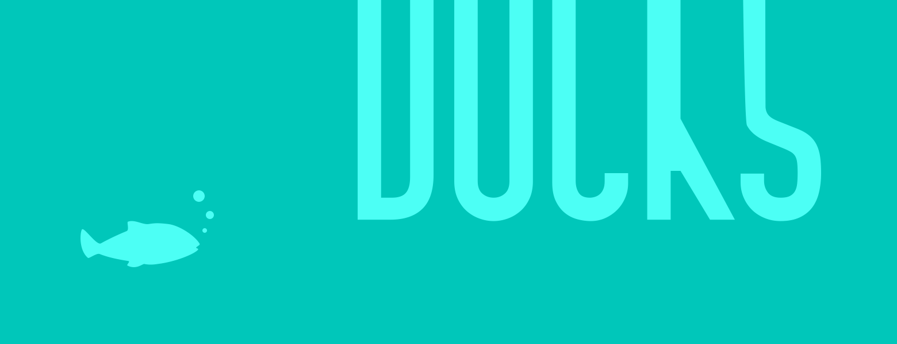

Docks Deep Dive
May 23, 2017 matthewwithanm
Tweet

This is a guest post written by Facebook’s Nuclide team member @matthewwithanm. He tells the story how the new docks got introduced to Atom and how package authors can make great use of them.
One of the things that the Nuclide team has always really loved about Atom is how it lets us extend and experiment with UI. Tools like Outline View, Console, Diagnostics, and the Debugger all need custom UI and, up until recently, their natural home was Atom’s Panels. Located at the edges of the window, panels are a great place for these kind of graphical tools but they have a couple of issues.
- They stack, and can easily end up consuming a lot of valuable screen real estate.
- Though most panels need to be closable, they each have their own UI for it.
In addition to these UX issues, they also require extra work from developers. For example, the Atom tree view had special logic that allowed users to show it on either the left or right side of their screen. Anybody wanting similar functionality for their package had to duplicate this logic.
To get around these limitations, Nuclide introduced collapsible pane containers—now called “docks”—at the edges of the window. Each dock can hold multiple items, which users can reposition in order to get their layout of choice. Thanks to help from the Atom team, we’ve contributed this functionality upstream for Atom 1.17. We’re super excited for the community to start taking advantage of them but, before you do, we figured we should tell you how they work 😊

Opening Items in Docks
At their core, docks are just new places that workspace items can go in. What’s a workspace item? The most common example is a text editor, but there are plenty of others: the settings view, search results, and welcome guide are all workspace items. Knowing that, it probably won’t be too surprising that we haven’t added much new API to Atom—instead, we’ve built on the APIs that already existed for managing these items. The most basic of these is atom.workspace.open(). Traditionally, this method has accepted a URL which Atom then associates with a view. This functionality maintains intact, but you can also open an item directly now:
const item = {
element: document.createElement('div'),
getTitle: () => 'My Awesome Item',
getURI: () => 'atom://my-package/my-item',
getDefaultLocation: () => 'right'
};
atom.workspace.open(item);
You’ve probably noticed the item’s getDefaultLocation() method. This is a new (optional) method that returns one of 'right', 'left', 'bottom', or 'center' depending on where you—the package author—want your view to appear initially. The difference between this and something like atom.workspace.addRightPanel() is that it’s only a suggestion; if a user moves the item to a new location, their preference will be remembered and used the next time an item with the same URI is opened. Of course, sometimes you may want to limit the locations that users can move your item to. For that, you can add a getAllowedLocations() method to your item:
getAllowedLocations: () => ['left', 'right']
Other newly supported item methods include getPreferredWidth() and getPreferredHeight(), which determine the initial size of the dock.
Toggling Items
When you have multiple items sharing a single dock, toggling an item isn’t as straightforward as just open()ing and destroy()ing it. If your item isn’t visible, it should be made visible, but if it is, the entire dock should be hidden. It can be tough to get this logic right (not to mention a pain to have to implement it every time), so we added a new API for doing it: atom.workspace.toggle(). Just pass it an item or URI and it’ll do the rest. In Nuclide, we use this to create “toggle” commands:
atom.commands.add(
'atom-workspace',
'my-package:toggle',
() => {
atom.workspace.toggle(item);
},
);
If the item is visible and in a dock, the dock will be collapsed; if it’s in the workspace center, the item will be destroyed. Like open(), toggle() accepts URIs as well as items. This is useful for when you can have multiple copies of your item in the workspace—for example, if you want to allow users to split your item and create a duplicate. Instead of having to keep track of the items yourself, just make sure their getURI() methods return the same URI. Passing that URI to toggle() will Do The Right Thing.
Digging Deeper
So far we’ve just looked at the API for dealing with items. In general, they work like this: items declare things about how they want to be displayed and Atom (taking into account user preferences), displays them. This relationship is really important because it gives users more control over their workspace and Atom the ability to make innovations without requiring any updates from you.
However, for those occasions where you just can’t handle giving up control, there are imperative APIs for interacting directly with docks: atom.workspace.getLeftDock(), atom.workspace.getRightDock(), and (you guessed it) atom.workspace.getBottomDock(). The returned object allows direct control over the dock with methods like show(), hide(), and toggle(), as well as manipulation of its panes and pane items via methods like observePanes() and getActivePaneItem(). A similar object, which represents the center of the workspace and normally houses your text editors, is returned by atom.workspace.getCenter().
Conclusion
Docks have been an important addition to Nuclide. Not only have they made the experience more consistent, but they’ve also given developers here at Facebook more control over their editor’s real estate. We’re really excited to have been able to collaborate with the Atom team to bring this feature to everybody…and even more excited to see what you build with it! Why not get started now by checking out the Active Editor Info tutorial?